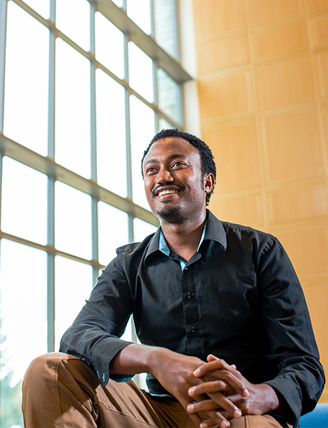

ESHETU FELEKE | Building Solutions
Eshetu seemed fated from an early age to study architecture. He drew a lot as a child— buildings of all types with people in and around them. Once at Middlebury College, he codified his affinity for design by majoring in the history of art and architecture. He interned with an Ethiopian firm during his sophomore winter term and studied the subject in Paris his junior year. He was even on one of the Middlebury teams to compete in the U.S. Department of Energy’s Solar Decathlon, designing and building a solar-powered home with fellow undergraduates.
Every time he returned home after one of these experiences, he would be struck anew by the contrast between the world he had come from and the places his education had taken him. He was particularly troubled by the thousands of homeless children on the streets of the Ethiopian capital—many orphaned by the HIV/AIDS epidemic. “One of the first things you notice when you go to Addis is how many people have nothing,” Eshetu says. “It can be pouring rain, and they might have one small piece of cloth.”
“I can’t imagine turning my back on where I came from.
I always knew I would return.”
Many of the city’s homeless children shine shoes for a living, and Eshetu learned more about their circumstances by giving them his business. Through many conversations, he realized that shelter was what these children needed most in order to break the cycle of desperation. “You can’t expect a kid to attend school after spending the night out on the street,” he explains. Shelter was the necessary first step in giving access to the only lasting solution to poverty: education.

Eshetu himself had earned a Davis United World College Scholarship to pursue his undergraduate degree in the United States after having received merit scholarships from the age of 11. Without this help, he never could have accessed the educational advantages he has experienced.
Now he wants to give back. “I can’t imagine turning my back on where I came from,” he says. “I always knew I would return.”
After graduating from Middlebury in 2014, Eshetu went home immediately to pursue an idea: building lightweight, inexpensive, and easily portable shelters for homeless children. The design is clever—on wheels so a child can move it and capped with a roof that covers a space adequate for both sleep and work. Shining shoes or selling things provides a critical source of income for food and school fees. Most critically, even though the structure is, as Eshetu describes, a “transitional space,” it gives the children something they can call their own. It gives shelter but also pride and hope.
A Kathryn Davis Fellowship for Peace made it possible for Eshetu to return to Middlebury for a summer—this time to study Chinese. A working knowledge of the language will help him partner with Chinese companies currently gaining influence as developers and builders in his country. He knows they can help him manufacture his design. He also hopes his language skill will be a unique asset in the job market. He has yet to meet another Ethiopian in the capital who speaks Chinese.